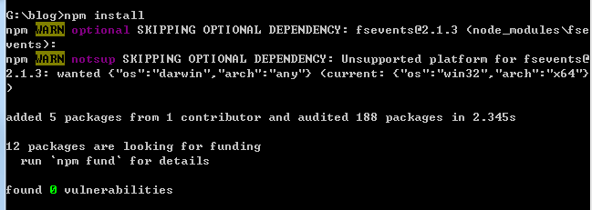

node.js环境
Node.js 安装包及源码下载地址为：https://nodejs.org/en/download/
1 | node -v |
检测是否安装成功
git环境
git 下载地址为：https://git-scm.com/
1 | git --version |
检验有没有安装成功
github账户
github账户注册和新建项目，项目必须要遵守格式：账户名.github.io
hexo本地环境
第一步：安装hexo
首先创建一个新目录，进入到新目录执行
1 | npm install hexo -g |
第二步：查看hexo版本
1 | hexo -v |
第三步：初始化hexo
1 | hexo init |
第四步：安装组件
1 | npm install |

第五步：生成文件
1 | hexo generate |
第六步：启动hexo
1 | hexo server |
在浏览器打开http://localhost:4000/
hexo上传到github
生成公钥
在git bash里输入
1 | ssh-keygen -t rsa -C "youremail@example.com" |
复制公钥内容
添加SSH keys
部署hexo
修改_config.yml文件
1 | deploy: |
上传到github
1 | npm install hexo-deployer-git --save |
每次提交执行命令
1 | hexo clean |
输入用户名密码
在浏览器打开YourgithubName.github.io
试着修改landspace模板
谷歌搜索改成百度搜索
G:\blog\node_modules\hexo\lib\plugins\helper\search_form.js 文件
action=”//baidu.com/s”
input type=”search” name=”wd”
jquery.min.js地址修改
G:\blog\themes\landscape\layout_partial\after-footer.ejs 文件
改成
1 | <script src="//libs.baidu.com/jquery/2.0.0/jquery.min.js"></script> |
添加返回首页图标
G:\blog\themes\landscape\layout_partial\footer.ejs 文件
在id=”footer”里加上
1 | <div id="goback" onclick="window.scrollTo('0','0')"></div> |
G:\blog\themes\landscape\source\css_partial\footer.styl 文件加上
1 | #goback |
RECENT POSTS 数量
G:\blog\themes\landscape\layout_widget\recent_posts.ejs文件
limit(5) 改成 limit(20)
添加文章目录
在 layout/_partial/post/ 下创建 toc.ejs 文件
1 | <div id="toc" class="toc-article"> |
修改 _partial/article.ejs 文件
1 | ...... |
修改 source/css/style.styl 文件，添加 @import '_partial/toc'
在 source/css/_partial/ 下创建 toc.styl 文件
1 | #toc |